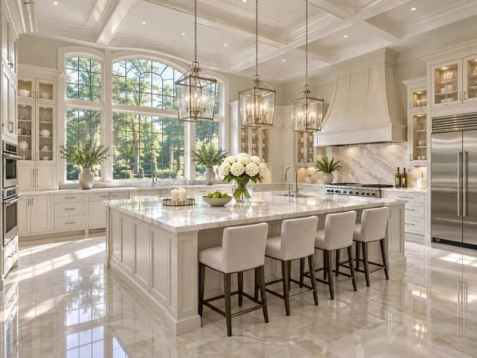

Fine dust removal
Reachable surfaces, ledges, fixtures, shelves, doors, trim, and horizontal areas are addressed to reduce visible renovation dust.
POST-CONSTRUCTION · NORTH NJ
Purelux Cleaning provides post-construction cleaning for North NJ homes and small properties after renovation, repair, remodeling, or build-out work. We focus on fine dust, visible surfaces, floors, trim, vents, fixtures, edges, and the detail cleanup that helps a project feel complete.
Plan this service →Personalized scope · No obligation

THE WORK, EXPLAINED
These are service focus areas, not a universal promise. Exact inclusions depend on the property and your accepted quote.
Reachable surfaces, ledges, fixtures, shelves, doors, trim, and horizontal areas are addressed to reduce visible renovation dust.
Vacuuming, mopping, floor edges, corners, transitions, and high-traffic construction paths are cleaned with a finishing mindset.
Baseboards, door frames, windowsills, hardware, corners, and room edges receive focused attention where dust settles.
Counters, sinks, vanities, fixtures, cabinet fronts, backsplash areas, and appliance exteriors can be included by project scope.
Accessible vents, light fixtures, switch plates, and high-touch hardware are reviewed as part of the detailed cleanup plan.
A finishing pass helps the renovated space feel cleaner, more usable, and closer to move-in or photo-ready condition.
HELP US QUOTE THE RIGHT WORK
WHEN THIS SERVICE FITS
Cabinet work, tile, plumbing, drywall, and fixture updates often leave fine dust and detail areas that need careful cleanup.
New flooring or refinishing can leave residue around edges, trim, transitions, and surrounding rooms.
Dust and residue can settle on surfaces, ledges, floors, vents, and nearby rooms even after contractors leave.
A detailed cleanup helps the space feel ready before furniture returns, photos are taken, or the room is used again.
THE PURELUX PROJECT GALLERY
Explore original project photos, before-and-after details, and their documented locations in one place.
BEFORE YOU REQUEST
Yes. Purelux Cleaning provides post-construction cleaning after renovations, repairs, remodeling, and dust-heavy projects across North NJ.
Dust often settles on floors, trim, ledges, vents, fixtures, shelves, doors, cabinets, corners, and rooms near the project area.
Accessible vents, fixtures, switch plates, and hardware can be included in the scope when they need attention after construction work.
Some projects need more than one cleaning phase, especially when dust continues to settle. We explain that clearly when reviewing the scope.
CLEAR SCOPE BEFORE COMMITMENT
Share the details that shape a useful quote. Review your scope and pricing before approving anything.
CONNECTED CARE
A fresh baseline. Care for the details.
EXPLORE SERVICE →A cleaner rhythm. Week after week.
EXPLORE SERVICE →A careful clean. A better handoff.